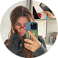

Art, design & coding
Цифровой блок Школы дизайна


Design & Coding
01
Что это такое
ADC Media — это онлайн-пространство сообщества Art, Design and Coding: студентов и выпускников цифрового блока Школы дизайна НИУ ВШЭ.
Успехи и путь
Инсайты и обсуждения
Мнения и поддержка
Видимость и фиксация опыта
02
Что мы делаем
Мы собираем честные истории о победах и трудностях в карьере, которые обычно остаются только в резюме или разговорах с друзьями. Здесь они становятся частью общего архива опыта, чтобы каждый мог в нём ориентироваться и находить поддержку.
Карьерный путь стал непрозрачным, непонятно, почему отказывают на собеседованиях, поиск работы в целом стал сложнее

Мария Шевчун
03
Зачем
ADC медиа — это место, где студент становится видимым, выпускник остаётся частью сообщества, а преподаватели и работодатели видят целостную картину. Вместе мы создаём созвездие Школы дизайна: каждое интервью — это звезда, и чем больше их загорается, тем яснее дорога для следующих поколений.
04
Для кого
Мы объединили наш опыт, чтобы сделать медиа живым и полезным для студентов Школы дизайна и дизайн-сообщества в целом.
05
Как участвовать?
Можно дать интервью — рассказать о своём опыте работы, о карьерных достижениях. Предложить тему — напишите нам, если есть идея для лекции или воркшопа.
Следите за новостями проекта в Telegram!
Увидеть, как связаны дизайнеры и их истории
Перейти к связям